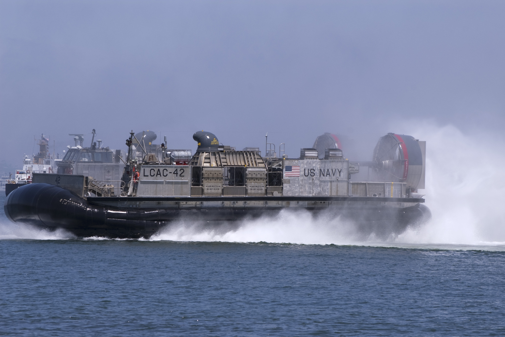

Electric Hovercraft Design and Build
By: Brooklyn
Introduction
Welcome to the world of Electric Hovercraft Design and Build, where we take you on a thrilling journey of creating hovercrafts that soar through the air and glide on water! For those new to this world, we're here to provide you with all the nitty-gritty details of building an electric hovercraft, from the ground up.
Our previous subheadings have given you a taste of the excitement and engineering involved in this project. From the fundamentals of hovercraft dynamics and design to the art and science of electric propulsion, we have covered it all.
But, before we dive into the specifics of electric hovercrafts, let's first understand what exactly is a hovercraft.
A hovercraft, also known as an air-cushion vehicle, is a craft capable of travelling over land or water while being supported by a cushion of air. This cushion of air is produced by fans or propellers that direct air downward and create a high-pressure air pocket between the hovercraft and the ground or water.
Now, imagine taking this concept a step further by using electric propulsion to power the fans or propellers. The result? A sleek and efficient machine that is not only environmentally friendly but is also capable of pushing the boundaries of speed and agility.
Join us as we dive into the world of electric hovercrafts, where we explore innovative design concepts, cutting-edge technology, and advanced engineering techniques that go into creating these incredible machines. Get ready to be inspired, learn something new, and take the first steps towards designing and building your very own electric hovercraft!
Step 1: Choose the right materials
When it comes to designing and building your own electric hovercraft, choosing the right materials is the first and most important step. Not only will the materials you choose affect the overall performance of your hovercraft, but they will also impact its durability and longevity.
One of the most common materials used in hovercraft construction is foam insulation board. This material is lightweight, easy to work with, and provides excellent buoyancy. Polyethylene and polypropylene foam are popular choices for hovercraft builders, as they offer superior resistance to water and other environmental factors.
Another important component of your hovercraft's construction is the motor. When choosing a motor, it's important to select one that is powerful enough to provide the necessary thrust for your hovercraft to move forward. Electric motors are typically the most popular choice for small hovercrafts, as they are quiet, efficient, and relatively easy to install.
You'll also need to consider the type of skirt material you want to use for the bottom of your hovercraft. Neoprene and Hypalon are two popular choices, as they are strong, flexible, and provide a good seal against the ground. Other materials like PVC and vinyl are also commonly used, but they are less durable and may require more frequent repairs.
Ultimately, the materials you choose for your electric hovercraft will depend on your specific needs and desires. Whether you're building a small, personal hovercraft or a larger commercial model, taking the time to research and select the right materials is crucial for ensuring a successful build. So, take your time to consider your options, weigh the pros and cons, and choose the materials that are best suited to your project.
Step 2: Design the body
The Perfect Shape: Designing the Body for Your Electric Hovercraft
Now that you've figured out the power system for your electric hovercraft, it's time to move on to the body design. The body is essentially the hull that carries the weight of the hovercraft and provides floatation, lift, and an aerodynamic profile. Without a well-designed body, your hovercraft won't be able to perform well.
The body design of your hovercraft should reflect the kind of terrain it will be used on. A rounded shape offers ease of maneuverability and works best on water, but it might struggle on land. A flat-bottomed hull for a hovercraft offers stability and is great for land use, but may struggle on water. Therefore, a body design that is flat on the bottom and slightly curved on the sides is ideal because it offers stability and maneuverability.
When designing the body of your hovercraft, you have several materials to choose from. The most common are fiberglass, carbon fiber, and plastics. Each material has its advantages and disadvantages, so choose the one that suits your needs.
When designing the body of your hovercraft, aim for a streamlined shape. A smooth and rounded design reduces drag, enhances stability, and minimizes wave formation. The positioning of your fans or props can impact the design of the body, so ensure they have sufficient clearance, and you have proper channeling methods.
Finally, your hovercraft body design should be optimized for speed, endurance, and weight. Incorporate lightweight materials, such as thinner plastics and ultra-lightweight core materials, to reduce weight and enhance speed. Additionally, ensure that the body contours can accommodate key parts like the rudder, propeller, lift fan or skirt.
With a well-designed body, you will have a hovercraft that is agile and capable of tackling any terrain with ease.
Step 3: Build the Air Cushion
One of the most important aspects of building an electric hovercraft is creating the cushion of air that will lift the craft off the ground. In Step 3 of the design and build process, you will learn how to build the air cushion that will make your electric hovercraft glide effortlessly over any terrain.
To begin, it is important to understand the technology behind the air cushion system. Essentially, the cushion is created by forcing air underneath the hovercraft, which lifts it off the ground and reduces friction on the surface below. This is achieved through the use of a fan, which pushes air up into a plenum chamber beneath the craft. From there, the air is forced out through a series of small ports, creating the cushion that allows the hovercraft to move.
When building the air cushion system, it is important to pay attention to the size and placement of the fan, as well as the size and shape of the plenum chamber and ports. These factors will affect the strength and stability of the cushion, as well as the hovercraft's overall performance.
There are also a number of materials that can be used to construct the air cushion system, including PVC pipe and fittings, foam insulation, and marine-grade plywood. It is important to choose materials that are lightweight, durable, and able to withstand the pressures and stresses of high-speed travel over rough terrain.
Building the air cushion system can be a challenging and time-consuming process, but it is crucial to the success of your electric hovercraft. With careful planning and attention to detail, you can create a cushion of air that will allow you to glide effortlessly over water, sand, snow, and more.
Step 4: Install the Motor
As you continue to explore the exciting world of electric hovercraft design and build, you'll find yourself enamored with the endless possibilities of turning your dreams into reality. With each step, you get closer to constructing a fully functional, eco-friendly hovercraft that would make any enthusiast envious. Up next is Step 4: Install the Motor.
When it comes to hovercraft motors, the options are numerous. It all depends on what your final design will be used for. But before we go down that path, let's take a step back and talk about the basics. Your electric hovercraft motor needs to have a few important qualities to make your project a success.
Firstly, it must be powerful enough to move the hovercraft through water or across land without breaking down. Secondly, it should be efficient to ensure that you don't run out of power unexpectedly while hovering over water. Lastly, the motor must be quiet to avoid noise pollution and to make the experience more enjoyable for all.
Now, let's talk about the different types of electric motors. If your hovercraft is designed for speed, then a brushed or brushless DC motor is the way to go. If you're looking to carry more weight, then you'll want to go for a larger motor size or a direct-drive hub motor, which increases torque while maintaining efficiency.
Whether you're building your hovercraft from scratch or ordering a kit, be sure to choose the motor that fits your specific needs. Then, follow the manufacturer's instructions to install it properly. Once installed, you'll have a hovercraft that is both safe and enjoyable to ride.
In conclusion, Step 4: Install the Motor, is a crucial component of your electric hovercraft build. With many motor options available, you'll want to choose the one that's best for your intended use. After installation, ensure that you test your hovercraft in a safe area to make sure everything is working correctly. Good luck with your build!
Step 5: Install Control System
A Perfect Control System for Your Electric Hovercraft Design and Build
Congratulations on making it this far in your electric hovercraft design and build project! In this crucial step, we will be discussing the installation of a control system for your hovercraft. This control system is a critical component that ensures the smooth operation and steering of the hovercraft, and it is an essential feature that must be placed correctly to achieve a fully functional hovercraft.
The control system of your electric hovercraft typically includes the steering system, engine throttle, braking system, and other switches that help to control the craft's different actions. The installation of the control system requires a good understanding of wiring diagrams and circuitry, and it must be done correctly to avoid any hazards that could pose risks to the craft or its operation.
At this stage, you'll need to ensure that all the components are connected correctly and that the electrical wiring has been done to the required standard. Check that the steering system is in place and functions correctly, that the throttle and braking systems work well, and that the switches are placed within reach of the operator.
A good control system for your electric hovercraft is an effective collaboration between the craft's design and operation. There is a need to balance maneuverability, speed, and stability while also ensuring the operator's ease in operating the craft. Some factors that can influence the effectiveness of the control system include the engine specifications, craft size, and the intended use of the hovercraft.
In conclusion, the installation of a good control system is a critical stage in your electric hovercraft design and build project. A well-built control system guarantees the smooth operation and enjoyment of your hovercraft. Ensure that professional standards are observed while installing the control system, and test it thoroughly before you launch the hovercraft. The next stage in your project is taking it for a test ride, so ensure that you have done everything correctly before you take off!
Step 6: Install Batteries and Speed Controllers
When it comes to building an electric hovercraft, one of the most critical steps is installing the batteries and speed controllers. At this stage of the build, you have already gathered most of the essential components required to make your hovercraft functional. Now it's time to focus on power management and control, which is where the batteries and speed controllers come in.
Choosing the right batteries is a crucial step when building an electric hovercraft. You need to select batteries that provide enough power to lift your hovercraft and keep it sustained for an extended period. Lithium-ion batteries are commonly used, thanks to their high energy density and superior performance.
Once you have the batteries sorted, the next step is to focus on the speed controller. The speed controller helps regulate the voltage output from the batteries, which is crucial to the motor's performance. It acts as a mediator between the batteries and the motor, ensuring that the motor operates at optimal levels and avoids overloading.
At this point, you have all the necessary elements to power up your electric hovercraft. However, it's essential to plan the installation process carefully. You need to ensure that the batteries are correctly situated and secured in place, and the speed controller is appropriately wired to the motor.
Installing the batteries and speed controllers is no easy feat, but it's a crucial step to get your electric hovercraft up and running. Taking the time to invest in top-quality batteries and controllers and ensuring proper installation will help you avoid frustration and disappointment down the line.
Building an electric hovercraft is a thrilling experience that provides you with an opportunity to showcase your creativity and technical prowess. With the batteries and speed controllers installed, you're one step closer to testing your creation on water and enjoying the thrill of gliding across the surface. So, let's get those batteries installed and take the hovercraft out for a spin!
Step 7: Testing and Fine-tuning
After months of planning, designing and building your electric hovercraft, it's time to put your creation to the test. Step 7 - Testing and Fine-tuning - is an essential part of the electric hovercraft design and build process, as it allows you to iron out any kinks and ensure that your hovercraft is performing at its best.
Testing your electric hovercraft can be done in a variety of ways - from simple buoyancy tests in a pool or bathtub to more complex testing on open water or rough terrain. It's important to make sure that all safety measures are taken before testing your hovercraft, as even small mistakes can have dangerous consequences.
Once you have identified any potential issues during testing, it's time to fine-tune your hovercraft for optimal performance. This can include adjusting the weight distribution or air pressure, tweaking the motor speed, or experimenting with different types of propellers or lift fans.
While testing and fine-tuning your electric hovercraft can be a time-consuming and meticulous process, it's important to remember that the end result is worth it. Not only will your hovercraft be safer and more efficient, but you will have gained invaluable knowledge and experience in the electric hovercraft design and build process.
Whether you're an experienced DIYer or a first-time hovercraft builder, Step 7 - Testing and Fine-tuning - is a crucial component of creating a successful and enjoyable electric hovercraft. So, sit back and enjoy the ride knowing that you've put in the hard work and created something truly unique and exciting.
Step 8: Safety Precautions
When it comes to designing and building electric hovercrafts, safety should always be a top priority. There are many precautions that need to be taken throughout the design and building process to ensure that the finished product is safe to operate. In Step 8 of our electric hovercraft design and build series, we will outline the safety precautions that should be taken to ensure a safe and enjoyable experience.
Firstly, electrical safety is of utmost importance. All electrical components should be properly insulated and grounded. It is important to follow all guidelines and safety protocols when installing batteries, motors, and other electronic components. Additionally, safety switches should be installed to shut down the hovercraft in the event of an emergency.
Secondly, structural safety is another important aspect to consider. The hull should be designed and built to withstand the rigors of operation. Additionally, all components and fastenings should be securely attached to the hull to prevent any potential hazards.
Thirdly, personal safety should be taken into consideration. Operators should always wear personal protective equipment (PPE) such as life jackets, helmets, and safety glasses. Additionally, passengers should also be provided with appropriate PPE.
Finally, it is important to be aware of the environment in which the hovercraft will be operating. Operators should be familiar with the waters and conditions in which they will be operating, and should always follow all relevant rules and regulations.
By taking these safety precautions, operators can enjoy their electric hovercraft with peace of mind, assured that they have done everything possible to ensure a safe and enjoyable experience. For more information on designing and building electric hovercrafts, be sure to explore the rest of our website.
Conclusion
As we come to the conclusion of our journey exploring electric hovercraft design and build, it's clear that this exciting technology is on the cusp of changing the way we move across land and sea. The possibilities for electric hovercraft range from recreational to military, and from transportation to disaster relief.
Throughout our exploration, we've delved into the history and evolution of hovercraft technology, and how advancements in electric motors, batteries, and materials have made electric hovercraft a viable and sustainable option. We've looked at the design principles behind hovercraft, and how factors such as air cushion pressure, lift to drag ratios, and hull shapes impact hovercraft performance.
We've also examined practical considerations in hovercraft build, including selecting motors and propellers, sizing and positioning batteries, and ensuring safety through appropriate insulation and protection. Plus, we've explored the wider implications of using electric power sources in hovercraft, such as reducing environmental harm, minimizing noise pollution, and increasing operational efficiency.
Throughout our journey, we've been inspired by the creativity and innovation of the electric hovercraft builders and designers out there. We're excited to see where this technology goes in the years to come, and we hope this website serves as a helpful resource and point of inspiration for anyone looking to explore electric hovercraft design and build. Thank you for joining us on this adventure!